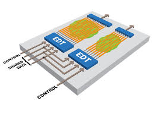

Learn overall dft in a glance
It is a technique in which adding testable features to design we can get controllability and observability ,we can generate and apply the patterns to detect manufacturing faults
2 0
It is a technique in which adding testable features to design we can get controllability and observability ,we can generate and apply the patterns to detect manufacturing faults
2 0
ATPG (acronym for both Automatic Test Pattern Generation and Automatic Test Pattern Generator) is an electronic design automation method/technology used to find an input (or test) sequence that, when applied to a digital circuit, enables automatic test equipment to distinguish between the correct circuit behavior
2 0
Scan insertion involves replacing sequential elements with scannable sequential elements (scan cells) and then stitching the scan cells together into scan registers, or scan chains. You can then use these serially-connected scan cells to shift data in and out when the design is in scan mode
2 0